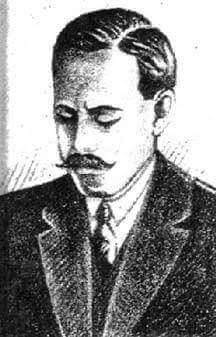
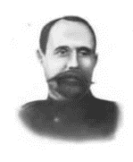

“Noli Me Tangere” is a significant novel in Philippine literature and history. Written by the national hero, Dr. José Rizal, it was first published in 1887 in Germany. The title, “Noli Me Tangere,” is Latin for “Touch Me Not,” which is a reference to a biblical verse. The novel is set during the Spanish colonial period in the Philippines and provides a detailed depiction of the society at that time. It exposes the inequities in law and practice in terms of the treatment by the ruling government and the Spanish Catholic friars of the resident peoples in the late-19th century. The story revolves around the character of Don Crisóstomo Ibarra, a young man of Filipino and Spanish descent who returns to the Philippines after a seven-year trip to Europe. Other major characters include María Clara, Kapitán Tiyago, Padre Damaso, Elias, Pilosopo Tasyo, Doña Victorina, and Sisa. “Noli Me Tangere” has had a profound influence on Filipino nationalism and is considered the national epic of the Philippines. The Rizal Law requires “Noli Me Tangere” and its sequel, “El Filibusterismo,” to be read by all high school students throughout the country. The novel has been translated into various languages and has been adapted into many forms, such as operas, musicals, plays, and other forms of art. It continues to be a source of inspiration and a symbol of the Filipino struggle for independence and national identity.
Mang Pablo: An old leader of the bandits who Elias wanted to seek help from.
Tinchang: Captain Tinong's fearful wife.
Don Primitivo An old man who is skilled in argumentation and loves to speak Latin. He is Tinchang's cousin and advises Captain Tinong. 3
Don Pedro Eibarrimendia Crisostomo Ibarra's grandfather. He was the cause of Elias' ancestors' severe suffering.
Don Saturnino Crisostomo Ibarra's ancestor.

Don Rafael Ibarra Crisostomo Ibarra's father. He was envied by Padre Damaso for his wealth. He was also called a heretic.
Neneng One of Maria Clara's friends, modest and thoughtful.
Victoria Maria Clara's quiet friend courted by Albino.
Andeng A skilled cook and Maria Clara's sister.
Sinang Captain Basilio's daughter and Maria Clara's cheerful friend.
Iday Maria Clara's beautiful friend who plays the harp.
Donya Pia Alba Maria Clara's devout mother who died after giving birth.
Aunt Isabel Captain Tiyago's cousin who helped raise Maria Clara
Siblings whose father was killed by the Spaniards.
Lucas A yellow man who made the carriage used in the failed attempt to kill Ibarra.
Senyor Nol Juan He managed the activities of building the school.

Don Filipo A lieutenant mayor who loves to read Latin. He is Sinang's father

Linares A distant nephew of Don Tiburcio and cousin of Padre Damaso's godson, chosen to marry Maria Clara.
Don Tiburcio de Espadaña A lame and hunchbacked Castilian who came to the Philippines in search of a better fortune. He is the husband of Donya Victorina and pretends to be a doctor.
Donya Victorina de los Reyes de Espadaña A woman pretending to be a mestiza Castilian, hence the excessive use of rouge on her face and false Castilian manners. She is the wife of Don Tiburcio de Espadaña.
Donya Consolacion Alferes' wife, formerly a laundress with vulgar language and behavior. She is ridiculous in her attire and embarrasses Alferes. She believes she is more beautiful than Maria Clara.
Alferes The head of the civil guards and a rival of the priest in power in San Diego. His wife is Donya Consolacion.
Lieutenant Guevarra A loyal lieutenant of the civil guards who informed Ibarra about the misfortune that happened to his father.
Basilio and Crispin Sisa's siblings falsely accused of stealing. They are both sacristans and bell-ringers at the church of San Diego. Basilio is the eldest, and Crispin is the youngest.
Pedro An irresponsible father and a bad husband to Sisa.
Sisa A loving mother who went insane. She has a neglectful and cruel husband.
Pilosopo Tasyo or Don Anastacio A knowledgeable elderly adviser to the educated citizens of San Diego. The uneducated see him as crazy, but for the educated, he is a philosopher. He couldn't continue his education and became insane early, spending his time reading books.
Captain-General The most powerful Spanish official in the Philippines. He took steps to lift Ibarra's excommunication.
Padre Hernando De La Sibyla An Augustinian friar who secretly observes the actions of Ibarra. He was also a teacher of Ibarra and very helpful to Padre Damaso in times of anomalies ahead; And wears golden glasses.
Padre Bernardo Salvi The priest who replaced Padre Damaso and secretly has feelings for Maria Clara.
Padre Damaso Verdolagas A talkative and rough Franciscan friar. He was the former parish priest in San Diego who ordered the exhumation and transfer of Don Rafael Ibarra's remains to the non-foreigner cemetery.
Captain Tiyago or Don Santiago de los Santos A Binondo-based merchant. He is the foster father of Maria Clara. He often hosts gatherings and is known for his generosity.
Elias A pilot and farmer who helped Ibarra to understand his town and its problems. He died while saving Ibarra. He is the son of the ancestral enemy of Crisostomo's ancestors
Maria Clara The woman loved by Ibarra. Maria Clara is known in San Diego for her beauty and grace. She is the daughter of Donya Pia Alba and Padre Damaso.
Juan Crisóstomo Ibarra y Magsalin Juan Crisóstomo Ibarra y Magsalin is the young man who studied in Europe. He dreamed of establishing a school to ensure the bright future of the youth of San Diego. He is the only son of Don Rafael Ibarra. He was considered "excommunicated" and implicated in the uprising. He is the sweetheart of Maria Clara.